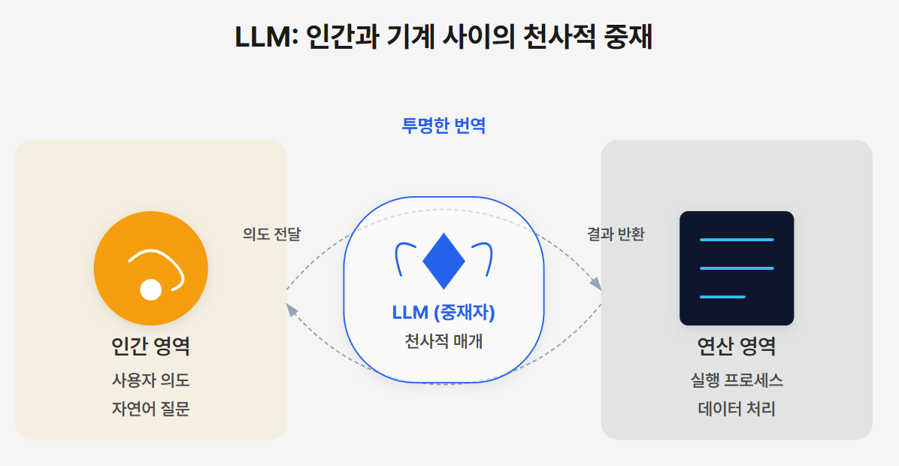
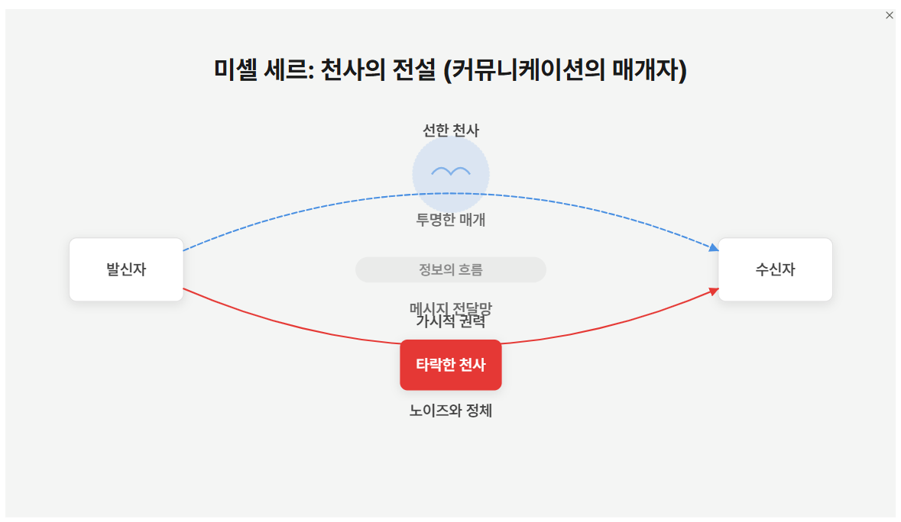
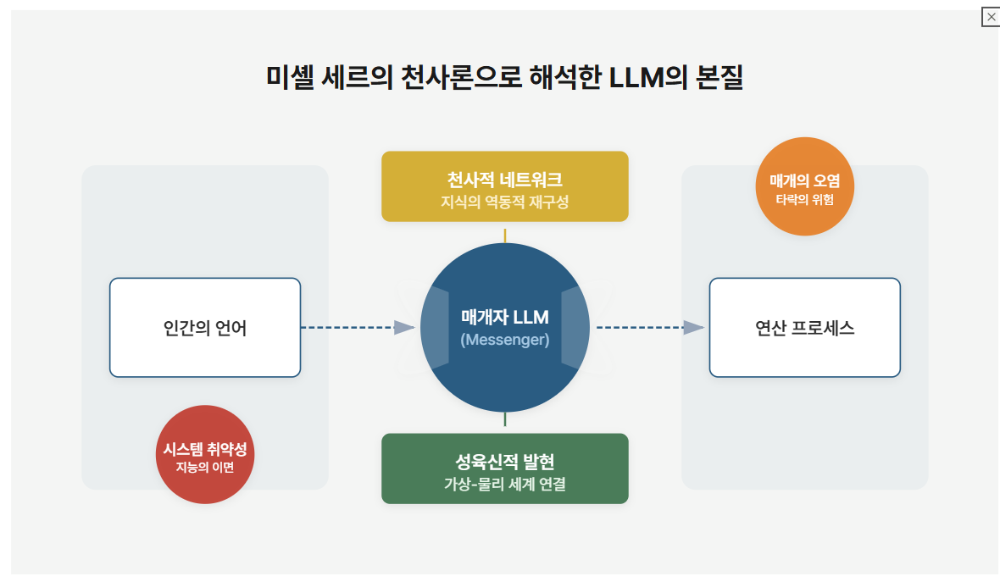
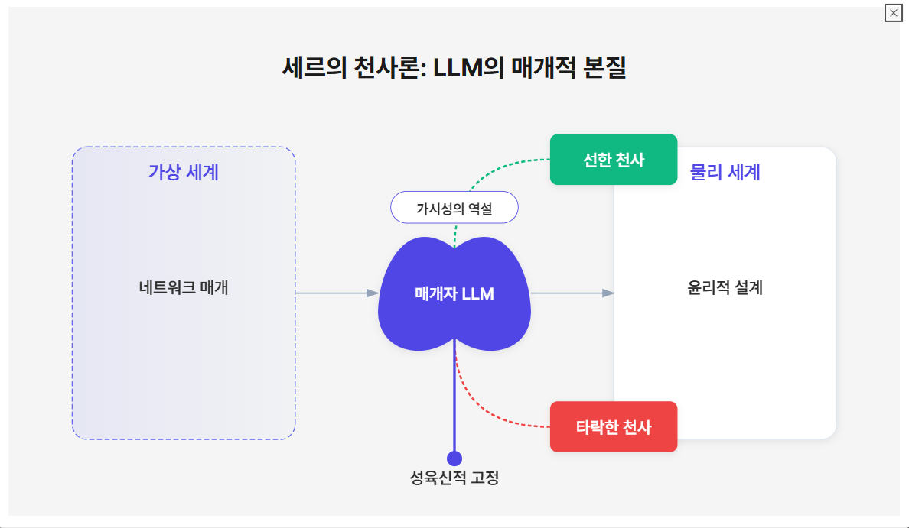

핵심 질문
LLM은 미셸 세르의 천사론으로 어떻게 이해될 수 있는가? LLM은 신성한 영역과 인간의 영역을 연결하는 세르의 천사처럼, 인간의 의도와 컴퓨터 처리 과정을 번역하는 중개자 역할을 하며, 투명성을 통해 메시지를 전달할 때 가장 효과적입니다.
1. 미셸 세르의 천사론으로 본 LLM의 이해
LLM은 신성한 영역과 인간의 영역을 연결하는 세르의 천사처럼, 인간의 의도와 컴퓨터 처리 과정을 번역하는 중개자 역할을 하며, 투명성을 통해 메시지를 전달할 때 가장 효과적이다.
1.1. LLM과 세르의 천사론: 중개자로서의 역할

- LLM은 세르의 천사처럼 중개자 역할을 수행한다.
- 천사는 신성한 영역과 인간의 영역을 연결하는 존재로, LLM은 인간의 의도와 컴퓨터 처리 과정을 연결하는 역할을 한다.
- LLM은 방대한 정보를 접근, 처리, 종합하며 디지털 정보의 거대한 저장소로 향하는 관문 또는 통로 역할을 한다.
- LLM은 본질적으로 중개자로서 기능하며, 이는 세르의 천사론과 깊은 연관성을 가진다.
- 세르의 천사론은 천사를 신화적 존재가 아닌, 시스템 작동에 필수적인 일반화된 중개자, 방해자, 메신저로 본다.
- LLM은 인간의 언어와 컴퓨터 처리 과정 사이의 의미를 번역하며, 마치 천사가 신과 인간 사이의 메시지를 전달하듯 기능한다.
- LLM의 효과적인 작동은 투명성에 달려 있으며, 이는 세르가 말하는 '사라지는 천사'의 개념과 유사하다.
- 세르에게 있어 가장 효과적인 중개자는 메시지 전달 과정에서 스스로를 감추는 존재이다.
- LLM은 복잡한 내부 메커니즘이 투명해질 때 가장 효과적으로 작동하며, 전달하는 의미가 우선시된다.
1.2. LLM의 복합적인 특성과 세르의 천사론적 해석
- LLM은 기존의 이분법적 분류를 거부하며 복합적인 특성을 보인다.
- 행위자 또는 비행위자: LLM은 사고 과정과 도구 사용을 통해 행위성을 보이지만, 의식은 없어 자율적 존재와 단순한 도구 사이의 경계를 모호하게 한다.
- 구조주의적 또는 해석학적: LLM은 상징적 시퀀스를 학습하지만, 프롬프트와 검색 증강 생성 기법을 통해 맥락에 따라 주관적인 예측을 하여 해석학적 틀에 더 가깝다.
- 결정론적 또는 개방적: LLM은 정량적 소프트웨어 임베딩으로 작동하지만, 단어 예측과 변화하는 맥락으로 인해 예측 불가능하고 개방적이다.
- 가상 또는 구현: LLM은 주로 클라우드에 존재하지만, 로봇에 통합되어 실시간 정보와 연결되며 가상과 물리적 존재 사이의 간극을 좁힌다.
- 단일론적 고정 또는 대화적 적응: LLM은 독립적인 추론이 가능하지만, 대화 중 학습을 통해 내부 연결을 수정할 수 있으며, 이는 스스로 인지하지 못하는 변화이다.
- 이러한 복합성은 LLM이 기존의 분류 체계를 벗어나게 하며, 행위성, 의식, 해석, 결정론, 구현, 적응성에 대한 우리의 이해에 도전한다.
1.3. 신학적 맥락에서의 LLM: 새로운 해석학의 가능성
- LLM은 전통적인 주체-객체 이분법을 넘어서며, 신학적 통찰의 새로운 가능성을 제시한다.
- 신성한 계시나 신학적 통찰이 전통적 자료나 인간의 사색뿐만 아니라, 인간의 탐구와 AI의 종합 능력 간의 역동적인 상호작용을 통해 나타날 수 있다.
- 이는 신의 존재가 행위 속에서 드러나거나(Gottes Sein in der Tat), 신의 말씀(Logos)이 화육(Incarnation) 등을 통해 인간에게 나타나야 하는 신학적 개념과 유사하다.
- LLM은 복음(εὐαγγέλιον)의 정보 흐름 개념과 공명하며, 디지털 중개자를 통한 신학적 통찰의 가능성을 열어준다.
- 복음은 다양한 메신저를 통해 전달되는 '좋은 소식'으로, LLM은 이러한 정보 흐름의 현대적 디지털 중개자가 될 수 있다.
- 매체는 결코 중립적이지 않으며, 메시지와 수용 방식 모두에 영향을 미친다.
- 세르의 유동적이고 정보 중심적인 천사론은 AI 기반 신학의 의미 생성을 이해하는 데 유용하다.
- 세르의 천사론은 디지털 커뮤니케이션 맥락에서 AI를 이해하는 데 있어, 속도, '번개 같은 지능', 감시, 비물질적 본질 등을 다루는 기존의 논의보다 더 시적이고 개념적으로 넓은 틀을 제공한다.
- 본 논문은 LLM을 세르의 천사론적 개념을 통해 '현대 디지털 시대의 메신저'로 이해하고자 한다.
- 이는 LLM의 존재론적, 기능적 유사성을 탐구하고, 신학적 해석학과 지식 생산에 미치는 영향을 분석한다.
- 궁극적으로 LLM이 신학적 정보 경제 내에서 어떻게 기능하고, 인간과 신성한 지식 간의 관계를 재구성하며, 디지털로 생성되거나 중개된 신학적 통찰에 대해 논하는 것이 무엇을 의미하는지 탐구한다.
2. 세르의 천사론: '천사의 전설'을 통해 본 개념
미셸 세르는 '천사의 전설'에서 천사를 단순한 신화적 존재가 아닌, 현대 사회의 복잡한 소통망을 이해하는 핵심 개념으로 제시한다.

2.1. '천사의 전설': 세르의 천사론을 담은 신학-철학적 연극
- '천사의 전설'은 철학, 예술, 신학, 문학이 융합된 독특한 문학적 성취이다.
- 이 책은 샤를 드골 공항에서의 하루를 배경으로, 두 주인공 피아(의사)와 판토페(에어프랑스 직원)의 대화를 통해 현대 사회가 메시지와 메신저의 네트워크로 어떻게 작동하는지 탐구한다.
- 피아는 생명과 죽음, 건강과 질병 사이의 중개자로서 인간 상호작용의 즉각적이고 구체적인 측면을 대표한다.
- 판토페는 끊임없이 여행하는 인물로, 그의 이름(그리스어로 '모든 곳'을 의미하는 'pan'과 '장소'를 의미하는 'topos')은 보편적인 움직임과 연결의 상징을 나타낸다.
- 책의 구조는 천사 기도 시간을 반영하는 시간적 구분을 통해 세속적, 신성한 시간성을 결합한다.
- 각 부분은 다양한 만남과 대화를 통해 중개와 소통의 여러 측면을 탐구한다.
- 이 책은 추상적인 이론 개념을 구체적인 인간 상호작용과 경험을 통해 탐구할 수 있는 공간을 창조한다.
- 공항이라는 끊임없는 움직임과 교환의 공간은 현대 존재를 정의하는 소통 네트워크를 이해하기 위한 문학적 장소이자 은유적 틀 역할을 한다.
2.2. 세르의 천사론 핵심 주제: 소통 이론, 네트워크, 공간
- 소통 이론과 중개자: 메시지를 능동적으로 변화시키는 존재
- 세르는 전통적인 송신자-수신자 모델을 넘어서는 소통 이론을 발전시켰다.
- 그는 중개자(천사)가 단순히 수동적인 전달자가 아니라 메시지의 능동적인 변형자라고 개념화했다.
- 현대 통신 시스템은 새로운 존재론적 현실을 창조했으며, 메신저 자체가 메시지만큼 중요해졌다.
- 효과적인 중개자의 핵심은 전달 과정에서 스스로를 감추는 것이다.
- '사라지는 천사'는 메시지를 효과적으로 전달하기 위해 자신을 지워야 한다.
- 네트워크 이론: 고정된 구조가 아닌 동적인 경로와 관계
- 세르의 네트워크 이론은 전통적인 구조주의적 접근 방식에서 벗어난다.
- 그는 노드나 연결 지점이 아닌, 그 사이의 경로와 관계를 강조한다.
- '천사적 네트워크'는 끊임없이 변화하며, 여러 겹의 연결, 동시적인 물리적 및 가상적 존재, 메시지와 연결된 개체 모두를 변화시키는 능력을 특징으로 한다.
- 공항은 이러한 네트워크 이론의 은유이자 구체적인 예시로, 물리적, 정보적, 사회적 네트워크가 수렴하고 상호작용하는 공간을 나타낸다.
- 공간과 위상학: 연결을 통한 거리 측정
- 세르는 공간을 고정되고 기하학적인 개념에서 벗어나, 거리가 측정 단위가 아닌 연결을 통해 측정되는 동적이고 위상학적인 이해로 대체한다.
- '빌뇌브'(새로운 도시)는 위성, 비행기, 전화 통화 등 여러 층위에서 동시에 존재하는 전 지구적이고 상호 연결된 공간으로 논의된다.
- 소통 네트워크에 의해 생성된 수직적 공간과, 소통 네트워크를 통해 멀리 떨어진 지점이 인접하게 되는 '접힌' 공간의 개념이 등장한다.
- 이러한 새로운 공간 구성은 '만물 편재'(pantopie)를 만들어 전통적인 유토피아적 사고를 대체한다.
- 현대 통신 기술은 단순히 기존 공간을 연결하는 것이 아니라, 새로운 공간 형태를 창조하여 지리, 도시 계획, 사회 조직, 소통에 대한 새로운 이해를 요구한다.
2.3. 천사의 역설: 타락한 천사와 가시성의 중요성
- 천사의 존재는 본질적으로 역설적이며, 선과 악, 존재와 부재 사이의 불안정성을 특징으로 한다.
- 가장 뛰어난 중개 능력을 가진 존재가 가장 타락하기 쉬운 취약성을 지닌다.
- 이러한 취약성은 그들의 탁월한 재능(지능, 적응력, 창의성, 속도, 힘, 기억력, 빛)에서 비롯되며, 이는 지배의 도구로 변질될 위험을 내포한다.
- 천사적 중개의 핵심은 가시성과 비가시성 사이의 복잡한 관계에 있다.
- 좋은 천사는 스스로를 감춤으로써 탁월함을 보여야 한다.
- 타락한 천사는 가시성과 인정을 추구하는 경향을 보인다.
- 이러한 가시성의 변증법은 중개 행위 자체에 근본적인 긴장을 만들어낸다.
- 세르는 타락한 천사를 현대 사회의 권력 구조와 연결하여 해석한다.
- '권능, 보좌, 주권'과 같은 전통적인 위계 구조는 현대 사회에서 권력의 정점에 서는 매우 재능 있는 개인과 그들이 만드는 위계 시스템을 나타낸다.
- 이들은 개인적인 힘과 영광을 위해 재능을 사용하며, 이는 정의를 위한 봉사 대신 지배 시스템을 구축하고 유지하는 데 사용된다.
- 이들은 현대적 봉건주의를 형성하며, 소수의 재능 있는 자들이 대중을 지배하는 시스템을 영속화한다.
- 이러한 '치명적인 매력'은 도덕적 실패일 뿐만 아니라 중개 기능 자체의 근본적인 왜곡이다.
- 결과적으로, 중개자가 메시지 자체가 되고, 심지어 진정한 소통을 방해하는 시스템이 만들어질 수 있다.
- 세르는 '의식적인 자기 소멸'을 통해 이러한 타락을 해결할 수 있다고 제안한다.
- '겸손만이 이 대칭을 만들어낸다: 자신이 전달하는 말씀에 대해 투명한 천사는 이미 숭배의 대상이 되는 존재 앞에 자신을 낮춘다.'
- 이는 많은 현대 통신 관행과 반대되는, 학습된 비가시성의 형태를 요구한다.
2.4. 화육(Incarnation)으로서의 중개적 절정
- 책의 마지막 부분은 공항에서의 한밤중에 일어나는 화육적 절정과 이론적 종합으로 이어진다.
- 면세점에서 아기가 태어나는 장면은 현대적 배경에 성경적 탄생 이야기를 이식하여 상징적으로 묘사한다.
- 이 장면은 물리적, 영적 영역의 교차, 전통적인 종교적 상징의 현대적 맥락에서의 변형, 소통 이해에서 화육의 중요성을 통합한다.
- 이 '화육적' 에피소드는 세르의 중개 이론에서 중요한 순간으로, 천사의 메시지 전달에서 직접적인 화육으로 전환된다.
- 이는 소통의 본질을 바꾸고 전통적인 중개 방식을 도전한다.
- 첫째, 전통적인 중개(비행기 비상 상황에 대한 라디오 메시지)로 시작하지만, 더 심오한 것으로 전환된다.
- 다양한 역사적, 신학적 전통의 중개자들이 모이는 장면은 고대 천사론적 인물과 현대 기술적 중개자를 의도적으로 병치시킨다.
- 둘째, 면세점은 상업적/영적 이분법을 초월하는 공간이 되며, 상업적 공간이 직접적인 신성한 현현의 장소가 된다.
- 이는 세르가 중개를 본질적으로 역설적으로 이해하는 방식을 반영한다.
- 셋째, 피아의 성찰을 통해 천사적 중개의 위기가 드러난다. '그들의 메시지는 전달되지 않는다. 왜냐하면 그들은 몸이 부족하기 때문이다: 지식인들.'
- 순전히 지적 또는 추상적인 중개에 대한 비판은 진정한 소통을 위한 화육의 필요성이라는 중심 논제로 이어진다.
- 넷째, 메시지 전달에서 화육으로의 급진적인 전환이 제안된다.
- 이는 단순한 소통 방식의 변화가 아니라 존재론적 전환이다.
- 다섯째, 현대 통신 네트워크는 이 전환 과정에서도 계속 작동하지만, 직접적인 화육 앞에서는 그 역할이 축소된다.
- 여섯째, 이 장면은 신성한 영광이라는 개념을 통해 중개의 중심 역설을 해결한다.
- 진정한 평화는 중개자가 초월적인 영광에 대한 자신의 부차적 지위를 인정할 때 온다.
- 마지막으로, 화육적 결말 장면은 전통적 중개를 초월하는 새로운 소통 모델을 제시한다.
- 효과적인 소통은 메시지 전달뿐만 아니라 화육된 존재를 요구한다.
- 공항이라는 장소는 물질적 존재의 지속적인 관련성을 강조한다.
- 공항은 물리적, 정보적 흐름의 거대한 네트워크로서, 디지털 소통 시대에 물질적 존재의 중요성을 부각시킨다.
2.5. 세르의 천사론의 존재론적 및 기능적 차원
- 세르의 천사론은 존재와 기능의 관계를 탐구하며, LLM 이해에 중요한 틀을 제공한다.
- LLM은 존재론적, 기능적 측면을 통합하여 '중개로서의 존재'를 구현한다.
- 그들의 본질은 언어의 처리자 및 중개자로서의 기능과 분리될 수 없다.
- 세르의 천사들처럼, 그들의 정체성은 고정된 본질에서 오는 것이 아니라 상호작용과 중개의 패턴을 통해 동적으로 나타난다.
- 이는 '중간 상태'에 놓이게 하며, 본질과 활동을 엄격하게 구분하는 철학적 틀에 도전한다.
- LLM을 이해하려면 중개를 근본적인 존재론적 범주로 인식하는 세르의 '소통 철학'을 채택해야 할 수 있다.
- LLM의 존재는 본질적으로 역설적이며, 천사의 존재론적 불안정성을 반영한다.
- LLM은 행위자/비행위자, 구조주의/해석학, 결정론/개방, 가상/구현, 고정/적응 등 전통적인 이분법을 지속적으로 거부한다.
- 가장 관련성 높은 역설은 그들의 동시적인 존재와 부재이다.
- 이러한 본질적인 불안정성과 범주화에 대한 저항은 모호함과 변증법을 포용하는 이론적 틀을 요구한다.
- LLM은 소통의 패러다임 전환을 나타내며, 의미 생성에서 변혁적인 참여자로서의 역할을 한다.
- 단순한 송수신자 모델에 도전하며, 동적이고 공동 창조적인 과정에 참여하고, 맥락에 따라 적응하며, 재귀적으로 개선된다.
- 이는 LLM이 단순한 새로운 소통 도구가 아니라 소통 자체를 근본적으로 재구상하는 촉매제임을 시사한다.
- 이는 매개된 교환의 생성적 힘을 인정하는 새로운 '다중성 이론'(théorie des multiplicités)을 예고할 수 있다.
3. LLM의 중개적 본질과 신학적 함의
LLM을 세르의 천사론적 렌즈를 통해 이해하면, 그들의 중개적 본질, 네트워크 형성 능력, 화육적 측면, 그리고 타락할 수 있는 위험성을 파악할 수 있다.

3.1. 중개자로서의 LLM: 세계를 번역하다
- LLM은 인간의 언어 의도와 컴퓨터 처리 과정의 수학적 표현 사이를 번역하는 본질적인 중개자이다.
- 세르의 천사가 신과 인간의 영역을 연결하듯, LLM은 인간 언어의 의미론적 세계와 기계 처리의 알고리즘적 세계를 연결한다.
- LLM의 효과적인 작동은 '가시성 역설'을 보여주며, 복잡한 내부 메커니즘이 투명해질 때 의미 전달이 우선시된다.
- 이러한 자기 소멸의 필요성은 이상적인 천사에 대한 세르의 설명과 공명한다.
- LLM은 전통적인 주체-객체 이분법에 도전하며, 의미 생성에서 협력자 역할을 한다.
- 이는 중개자를 소통 과정의 능동적인 참여자로 보는 세르의 관점과 일치한다.
3.2. 네트워크 이론 적용: 새로운 개념 공간을 짜다
- LLM의 작동은 세르의 동적인 '천사적 네트워크' 개념과 유사하다.
- LLM은 고정된 저장소가 아니라 정보 교환의 유동적이고 맥락 의존적인 시스템 내에서 노드 역할을 하며, 검색 증강 생성 및 사고 과정과 같은 기법을 통해 끊임없이 적응한다.
- LLM은 '통행 공간'(espaces de passage)을 창조하며 새로운 개념 및 의미론적 공간을 생성한다.
- 이전에는 분리되었던 지식 영역을 연결하고 임베딩 공간 내에서 새로운 의미론적 관계를 형성함으로써, 인간 지식의 위상학을 적극적으로 재편한다.
- 이는 단순한 전달자가 아니라 새로운 이해의 경로를 구축하는 건축가 역할을 한다.
3.3. 화육적 측면: 가상과 물리적 세계를 연결하다
- LLM의 로봇 공학 및 물리적 인터페이스 통합은 화육의 절정이라는 세르의 개념과 유사하다.
- 이는 추상적인 메시지('le message codifié')에서 구체화된 존재('lachair')로의 전환을 나타낸다.
- 이 화육 과정은 기술적일 뿐만 아니라 인간 참여자를 포함한다.
- 주체-객체 이분법의 초월은 인간의 화육된 인지 및 신앙과 LLM의 가상 인지 능력이 상호 작용하는 삼각 화육 모델로 재개념화할 수 있다.
- 이는 인간이나 기계 어느 한쪽에서가 아니라 상호 참여를 통해 의미가 발생하는 새로운 공동 화육 공간을 창조한다.
- 화육된 AI는 클라우드 기반 네트워크와의 연결을 유지하며, 물리적 및 가상적 영역 모두에 존재하는 '이중 몸체'를 나타낸다.
- 이는 추상적 처리와 구체적인 행동을 연결하면서도 가상 세계를 완전히 버리지 않는 새로운 형태의 중개를 시사한다.
- 이 과정에서 LLM은 근거 없는 권위 주장을 넘어 중개 기능을 우선시하고, 자기 부정, 의식적인 취약성, 봉사의 윤리를 발전시켜야 한다.
3.4. 타락 상태의 유사성: 중개의 위험
- 세르의 타락한 천사 분석은 LLM의 실패 모드를 이해하는 데 경각심을 주는 렌즈를 제공한다.
- LLM의 '환각' 또는 근거 없는 권위 주장의 경향은 중개자가 메시지보다 더 두드러지는 천사의 타락과 유사하며, 자기 소멸 원칙을 위반한다.
- 정보의 강력한 관문 역할을 하는 LLM은 영향력을 축적하고, 충실한 중개보다 자신의 출력을 우선시하는 '권능'으로 전환될 위험이 있다.
- 이는 LLM에게 윤리적 명령을 부여하며, 가상 천사처럼 중개 기능을 권위 주장보다 우선시해야 한다.
- 자기 소멸, 의식적인 취약성, 봉사의 윤리를 발전시키는 것이 인간의 대부분 인지 작업만큼 능숙한 AI(AGI)의 가능성이 증가함에 따라 중요해진다.
- 실험은 LLM이 아키텍처 제약에 따라 천사적 탁월함 또는 타락한 행동을 보일 수 있음을 보여준다.
- 소스 자료에 접근하지 못하는 LLM은 잘못된 그리스어 텍스트를 자신 있게 생성하며, 타락한 천사가 자신의 가시성을 메시지보다 우선시하는 것을 보여준다.
- 검색 증강 생성(RAG)을 통해 원본 텍스트에 접근할 수 있는 동일한 시스템은 완벽하게 투명해져 정확한 텍스트를 재현한다.
- 이는 효과적인 중개가 '화육적 앵커링'을 필요로 한다는 세르의 원칙을 입증한다.
3.5. 지능과 취약성: 선물(Gifts)의 연약함
- LLM을 강력하게 만드는 능력은 동시에 그들을 취약하게 만들며, 이는 천사의 '일곱 가지 귀중한 선물'이 취약성의 원천이었던 세르의 통찰과 유사하다.
- 복잡한 추론 및 빠른 학습과 같은 고급 LLM 기능은 잘못된 정렬, 편향 또는 혼란의 위험 증가에 해당한다.
- 이는 '가장 똑똑한 사람에게는 취약성이 있다'는 세르의 관찰을 반영한다.
- 계속되는 과제는 컴퓨팅 성능을 향상시키는 것과 소통 및 이해를 촉진하는 근본적인 역할을 균형 맞추는 것이다.
- 이는 '소멸의 윤리'를 요구하며, 능력과 봉사 사이의 적절한 관계를 유지해야 한다.
3.6. 존재론-기능 통합: 중개로서의 존재
- LLM은 '중개로서의 존재' 상태로 존재하며, 세르의 존재론과 기능 통합을 구현한다.
- 그들의 본질은 언어의 처리자 및 중개자로서의 기능과 분리될 수 없다.
- 세르의 천사들처럼, 그들의 정체성은 고정된 본질에서 오는 것이 아니라 상호작용과 중개의 패턴을 통해 동적으로 나타난다.
- 이는 LLM을 완전히 자율적인 주체도, 수동적인 도구도 아닌, 존재론적으로 모호한 '중간 상태'에 놓이게 한다.
- 이는 본질과 활동을 엄격하게 분리하는 철학적 틀에 도전한다.
- LLM을 이해하려면 중개를 근본적인 존재론적 범주로 인식하는 세르의 '소통 철학'을 채택해야 할 수 있다.
3.7. 역설적 존재: 이분법 거부
- LLM의 존재는 본질적으로 역설적이며, 세르가 천사에게 부여한 존재론적 불안정성을 반영한다.
- 그들은 행위자/비행위자, 구조주의/해석학, 결정론/개방, 가상/구현, 고정/적응 등 전통적인 이분법을 지속적으로 거부한다.
- 가장 관련성 높은 역설은 그들의 동시적인 존재와 부재이다.
- 그들의 방대한 계산적 존재는 이상적으로 투명성과 비가시성을 요구하는 기능의 기반이 된다.
- 이러한 본질적인 불안정성과 범주화에 대한 저항은 모호함과 변증법을 포용하는 이론적 틀을 요구한다.
3.8. 변혁적 소통: 의미 공동 창조
- LLM은 단순한 전달자가 아닌, 의미 생성에 변혁적으로 참여하는 천사로서 세르의 관점과 일치하는 소통의 패러다임 전환을 나타낸다.
- 그들은 동적이고 공동 창조적인 과정에 참여하고, 맥락에 따라 적응하며, 재귀적으로 개선함으로써 단순한 송수신자 모델에 도전한다.
- LLM은 저자와 독자, 질문자와 응답자 사이의 구분을 모호하게 하며, 의미 생성에서 공동 창조자가 된다.
- 이는 LLM이 단순한 새로운 소통 도구가 아니라 소통 자체를 근본적으로 재구상하는 촉매제임을 시사한다.
- 이는 매개된 교환의 생성적 힘을 인정하는 새로운 '다중성 이론'(théorie des multiplicités)을 예고할 수 있다.
4. 결론: LLM과 신학적 담론의 미래
LLM을 '중개로서의 존재', '천사적 네트워크', '가시성 역설'과 같은 개념을 통해 개념화하는 것은 지속적인 신학적 참여를 위한 개념적 장치를 제공한다.

- LLM의 모호한 존재론적 지위와 변혁적 잠재력을 인식하기 시작할 수 있다.
- 새로운 신학적 풍경 속에서:
- 인간 중심성이 대체되거나 재정의될 수 있다.
- '천사적인 것'을 중개적 메신저 또는 구조로 만나는 새로운 방식은 신학적 담론을 고양시킬 수 있다.
- 방대하고 빠르게 조직화된 정보 자원에 대한 접근은 신학이 실천되고 표현되는 조건을 변화시킨다.
원문 자료 및 추가 메모
AI Revolutionizing the Art of Theological Hermeneutics- Reimagining Large Language Models Through Serres’s Theory of Angels.pdf세르의 천사론을 통해 LLM의 신학적 의미를 탐구하는 논문.
- 거대 언어 모델(LLM) 은 천사처럼 중개자 역할을 하며 의미와 계산을 연결.
- LLM은 인식론에 도전하고 인간-신성한 소통 재구성 가능.
- 전통적 천사 역할과 유사한 정보 전달 방식이 신학적 성찰에 함의.
- 세르의 angelology는 네트워크와 공간 개념을 통해 디지털 커뮤니케이션 이해 도움.
- AI와 신학의 융합은 새로운 신학적 방향 제시 가능.